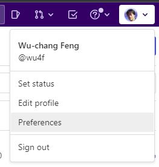
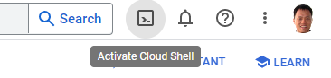
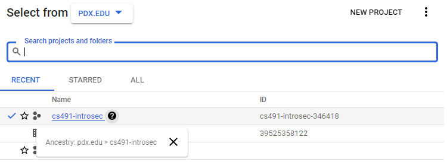
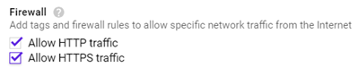
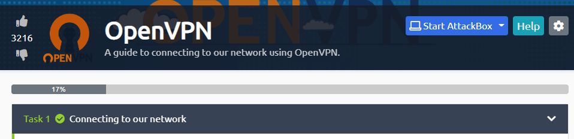
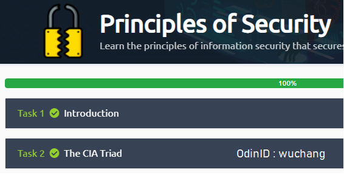

If you're not aware, there is a Slack workspace for computer science students here at PSU. If you haven't already, create a Slack account, join the workspace at https://pdx-cs.slack.com and add the course channel linked on the course web page. All course communication will be done through this platform; check the pinned section for important updates. Note that the course has a corresponding webpage for more permanent information. You can contact the professor via Direct Message @wuchang.
If you have a sensitive comment that you wish to notify me of anonymously, you may do so by visiting this page in an Incognito window: https://bit.ly/sayat-wuchang
We'll be using GitLab for the course's source control. Create an account via Google using your @pdx.edu email address by visiting https://gitlab.com/users/sign_up.

Upon completion, use the same credentials to login to GitLab. After logging in you should see the following:

Go to the upper right hand corner and click on the dropdown that is your user profile. You should see the option for "Preferences". Click on this option and you'll be taken to a page for customization of your avatar, status, and main settings.

In the left hand column there is an entry for SSH Keys. Select that entry and wait here. We're going to create a local public/private key pair to securely transfer data between the local repository and this remote hosted by GitLab.
SSH Keys
We will now create a local public/private ssh key pair on our Linux VM to securely transfer data between a local git repository and this remote hosted by GitLab.
Log into your Linux VM and change into the directory where SSH keys are stored:
cd ~/.ssh/
If you have not setup an SSH key before, perform the following
ssh-keygen -t rsa
We're specifying rsa here for clarity, although this is the default encryption method. Hitting enter will create a file named id_rsa which we'll use as an example. You should now have two files containing the key-pair in the ~/.ssh/ directory. One has a .pub extension and is your public key. The other is your private key and should never be revealed.
We will now add this public key to GitLab. Dump the contents of the key out:
cat id_rsa.pub
Then, copy and paste this into the SSH key field on GitLab in your browser. Finally, click "Add Key".

Create Project
Go back to the projects page and create a "New project" that is blank. 
Name the new project via the ProjectName above. Make sure the repository is still marked "Private" and initialize it with a README file.

Invite Instructor and TA as project developers
Next, go to the Settings tab and select members. From here you can add members to your project by typing in their username. Add the instructor and the TA as Developers to your project via their pdx.edu e-mail addresses (e.g. 
 Setup client
Setup client
On your Linux VM, set up your name and e-mail address for git.
git config --global user.name "<FirstName> <LastName>" git config --global user.email "<OdinID>@pdx.edu"
Then, clone the repository to your machine and change directories into it.
git clone git@gitlab.com:<GitLab-Username>/<ProjectName>.git cd <ProjectName>
We will now edit our first file and commit its changes to our repository. To do so, edit README.md file to show multiple styles of titles and lists in Markdown. Then, stage the file for addition, commit the file to the local git repository, then push the local commits to the remote version on GItLab.
Now, add it to the list of changed files that you want to stage to commit to the repository.
git add README.md
Commit all changed files that have been staged to the local git repository.
git commit -m "add README"
Then, push the copy of the local Commit all changed files that have been staged to the local git repository.
git push -u origin main
.gitignore
It is often the case that you'll have files in your local directory that you do not want added to your repository. To specify that these files should not be included in any commits, git uses a file called .gitignore. Create a .gitignore file that contains files that are common to Python that you do not want to add to your repository.
env/
*.pyc
__pycache__/Then, add it to the files you wish to commit, commit the file to your local repository, and then push the local repository to its remote.
git add .gitignore git commit -m "Adding .gitignore" git push -u origin main
git basics
Read the first 6 steps of the following link. You will need to become proficient with the following git commands for this course or use an IDE such as VSCode that can perform the operations for you.
git clone: Fetch a copy of a remote repositorygit add: Add a new file and/or directory to local repositorygit commit: Commit changes to local repositorygit push: Merge changes from local repository to a remote one. Implicitly assumes "origin" (place that you retrieved repo from) and "main" (branch)git pull: Merge changes from remote repository to your local one. Implicitly assumes "origin" (place that you retrieved repo from) and "main" (branch)
Incognito mode
To avoid applying the coupon you receive to the incorrect account, ensure that these steps are done in an "Incognito" or "Private Browsing" browser window to set up your account.
Then, visit https://console.cloud.google.com and login using your pdx.edu account to enable GCP. If you haven't used GCP yet and do not mind temporarily putting your credit card on the account, apply for the $300 coupon and use it to create a new billing account. Otherwise, wait for the instructor to email you a course coupon.
Create Project
Click on the pdx.edu organization from the console.

Then, click on "New Project"
Create a Google Cloud project with your ProjectName from above.

You should be taken to your project's Home page. For your lab notebook, you will need to ensure that all of your screenshots for your Google Cloud labs include your ProjectName.
To examine your Billing account and its usage, go to the Billing page from the console at https://console.cloud.google.com/billing

Set up a VM running the course Kali Linux VM. Log into your Google Cloud Platform account and go to your project's console.
Option #1: Cloud Shell
Click on the Cloud Shell icon from the web console shown below:

Create two firewall rules to allow HTTP and HTTPS traffic.
gcloud compute firewall-rules create default-allow-http \
--allow=tcp:80 --target-tags=http-server
gcloud compute firewall-rules create default-allow-https \
--allow=tcp:443 --target-tags=https-serverThen, run the command below to find the most recent version of the Kali VM image on the course's GCP project.
gcloud compute images list \
--project cs491-introsec-346418 --no-standard-imagesLaunch the latest Kali VM image using the gcloud command below, attaching the two rules to allow web traffic to it.
gcloud compute instances create kali-vm \
--machine-type e2-medium --zone us-west1-b \
--tags=http-server,https-server \
--image-project cs491-introsec-346418 --image kali-rolling-latestFinally, perform the command below to ssh into the VM instance after it comes up to ensure you can access it.
gcloud compute ssh kali-vmOption #2: Web UI
- Go to Compute Engine in Google Cloud Console → Compute Engine → VM Instances and create a new instance
- For the Boot Disk, click "Change", then in the upper tab click "Custom images"
- Click on "SELECT A PROJECT" and select from "PDX.EDU". Select
cs491-introsecand open it.

- Click on the "Image" field, then select the
kali-rolling-latestimage. - Finally, allow HTTP and HTTPS traffic for the VM, then create it.

Keep track of both the external and internal IP address of each instance. We will be using the internal IP address for the attacks, but will need to connect via the external IP addresses initially.
kali_external_IP, kali_internal_IP

Finally, ssh into your Kali VM instance to ensure you can access it.
We will now setup a remote desktop on the Compute Engine using the Remote Desktop Protocol (RDP) in order to enable a graphical interface to the VM. First, connect to the newly created instance. To connect from Cloud Shell, you can run the command below to connect to the VM.
gcloud compute ssh course-vmTo connect via the web console, navigate to the VM instances on Compute Engine, then click on "ssh" to bring up a shell session on it.

Setup development tools
sudo apt update sudo apt install python3-pip python3-dev python3-venv git -y
Also install docker and its packages. Add yourself to the docker group so that you're able to run the docker commands without sudo.
sudo apt install docker.io -y sudo usermod -a -G docker $(whoami)
Install and configure RDP
Within the VM, install the graphical software packages.
sudo apt install xfce4 xfce4-goodies xrdp -yCheck that the xrdp daemon is enabled and running.
sudo systemctl status xrdpIf not, start it.
sudo systemctl start xrdpOur RDP setup will require a username and password to authenticate. As Compute Engine instances typically perform authentication via OAuth2 and ssh keys, we will need to set a password for our account on the VM. To do so, run the following to set your account password on the VM for your username.
sudo passwd $USERInstall a web browser
If you wish to use a web browser on this VM, you can install Firefox directly.
sudo apt install firefox -yIf you prefer Chrome, then install Google's signing key, add Google's repository to your system, and then install the browser.
wget -q -O - https://dl.google.com/linux/linux_signing_key.pub | sudo gpg --dearmour -o /usr/share/keyrings/google_linux_signing_key.gpg
sudo sh -c 'echo "deb [arch=amd64 signed-by=/usr/share/keyrings/google_linux_signing_key.gpg] http://dl.google.com/linux/chrome/deb/ stable main" > /etc/apt/sources.list.d/google.list'
sudo apt update
sudo apt install google-chrome-stable -yConnect via RDP
On your local machine, connect to the VM's External IP address (shown above in the web console) using an RDP client. You may utilize clients that are built into the browser (e.g. Chrome Remote Desktop extension) or native clients on Windows (Remote Desktop Connection), MacOS (Microsoft Remote Desktop), or Linux (FreeRDP or remmina) to connect to the VM.

Then, login using your username and the password you set for it to bring up a graphical desktop on the VM.
Stop the VM
In order to save costs while keeping the machine image around so that it can be started later, exit out of the session and stop the VM. This can be done via the UI or via the command-line in Cloud Shell via:
gcloud compute instances stop course-vm
TryHackMe is a widely-used security training site that focuses on developing practical, hands-on skills for its users. The site is organized in "rooms" that contain lab content for users to complete to obtain badges. We will be using several of the site's free rooms as part of the course.
Visit the site at https://tryhackme.com/ and create an account. If you find the exercises useful, consider a subscription to the site to continue your development after the course.
Throughout the course, we will be using the free rooms of TryHackMe to get you started on various security topics. Some of the TryHackMe rooms will launch machines on TryHackMe for you to work with. In order to access these machines easily, TryHackMe provides VPN support. Both Portland State and TryHackMe have support for the freely available OpenVPN client. The OpenVPN client is installed on all MCECS lab machines.
Visit your first TryHackMe room at https://tryhackme.com/room/openvpn and complete it using the machine you intend to work from for the course.

Join the following room on TryHackMe:https://tryhackme.com/room/principlesofsecurity . The room covers the fundamental security principles, terminology, access control models, and threat models. Complete the exercise.
- Take a screenshot showing completion of the room (e.g. all tasks and 100% completion) with your OdinID for your first lab notebook
